Mapa Interativo da Rota
Clica em qualquer ponto ou rota para ver as fotografias reais, horários e direções no Google Maps.
Roteiro Dia-a-Dia
Todos os horários verificados, tempos de deslocação e fotografias reais de cada paragem.
Quem quiser cortar, corta pelo fim: sair do DANZÓN à 01:00 em vez das 02:30 não estraga nada do resto. Pelo princípio não dá, que a manhã é o voo.
Partida de Lisboa (LIS) ➔ Viena (VIE)
Encontro no Terminal 1 do Aeroporto Humberto Delgado em Lisboa às 06:15. Voo direto TAP TP 1270 com destino a Viena (3h 30m). Chegada ao meio-dia a Viena.
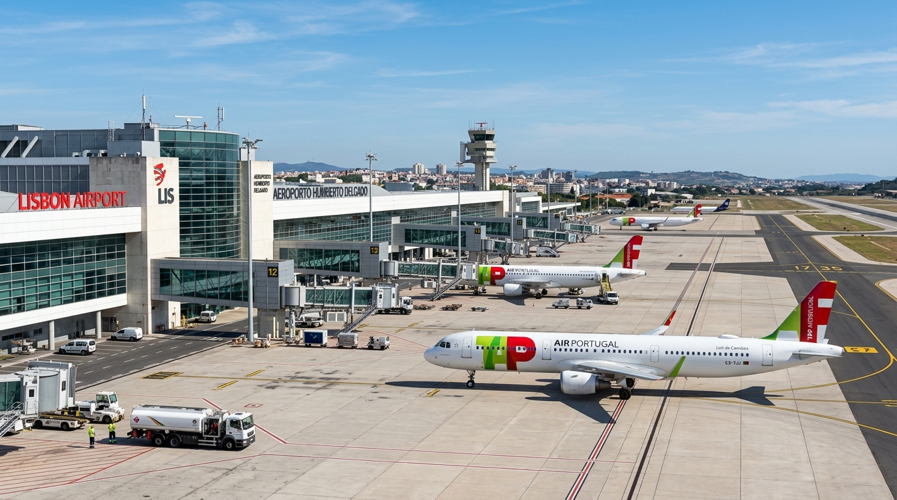
Chegada ao Aeroporto VIE: Railjet + Metro U1
Comboio ÖBB Railjet (RJ/RJX) direto da estação por baixo do aeroporto até Wien Hauptbahnhof (15 min) ➔ Metro U1 direto até Schwedenplatz (7 min) ➔ 4 min a pé. Tudo no mesmo bilhete.
🕐 Parte aos :03 e aos :33 de cada hora. Com aterragem às 12:35, o realista é apanhar o das 13:33 e estar à porta de casa por volta das 14:20.
💶 ~€5,50/pessoa, 4 pax ≈ €22. Tarifa a confirmar na app ÖBB; o histórico anda entre €4,50 e €5,50, portanto no pior caso são €4 a mais no grupo todo.
⚠️ Isto interessa sobretudo se o Railjet das 13:33 se atrasar e der a tentação de saltar para o primeiro comboio que apareça. Esperar pelo Railjet seguinte, parte aos :03 e aos :33, portanto nunca são mais de 30 minutos.
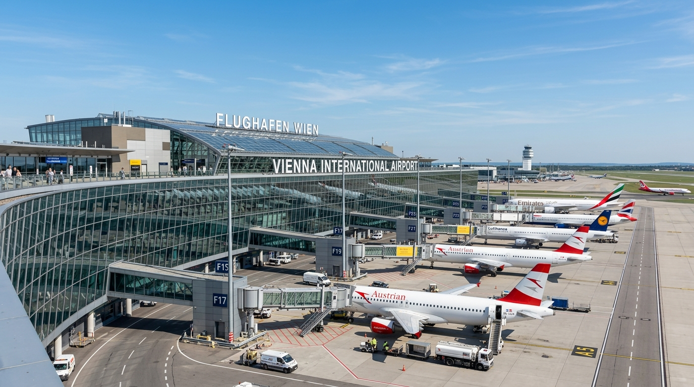
Central City Apartments (Judengasse 11)
Alojamento no coração histórico de Viena. Apenas 300m a pé da estação Schwedenplatz / Morzinplatz e a 50m dos melhores bares do Bermudadreieck!
⚠️ O check-in nestes apartamentos é tipicamente às 15:00. Pedir early check-in por email com antecedência, ou combinar deixar as malas.
Catedral Stephansdom, Graben, Hofburg & Volksgarten
Uma linha reta para poente, sem voltar atrás: casa ➔ Stephansdom (7 min) ➔ Graben e Kohlmarkt ➔ Hofburg (6 min) ➔ Volksgarten (7 min). Subida à Torre Sul da catedral (€8,00, só dinheiro; 343 degraus, última subida 18:15) para a vista 360°, ruas pedonais imperiais, o palácio dos Habsburgos e os jardins.
São 1,6 km à ida em três horas, passo de passeio, que é o que se aguenta com 5 horas de sono. O regresso pelo Ring são outros 1,4 km (18 min) e passa à porta de casa.
➕ Três paragens grátis, todas em cima do caminho: a Ruprechtskirche a 100 m de casa (a igreja mais antiga de Viena, séc. XII sobre fundações do ano 740), o relógio Ankeruhr a 150 m (mecânico, Jugendstil de 1914) e a Peterskirche a 30 m do Graben (cúpula turquesa, barroco de tirar o fôlego, com recital de órgão diário às 15:00).
Pôr do Sol no Canal do Danúbio (Donaukanal)
Graffiti, bares improvisados e gente sentada no betão a beber, a 300 m (3 min) do apartamento. O sol põe-se às 18:49, com luz azul até às ~19:25.
💶 Cerveja do supermercado, sentados no betão. Grátis e sem reserva, é o que os vienenses fazem a meio da semana.
☀️ É a margem virada a poente. Sentados aqui, o sol põe-se em frente, por cima da água e da silhueta da cidade velha. Na margem do 1.º distrito ficam de costas para ele.
🍺 É onde estão os bares e o movimento. A Obere Donaustraße é a rua desta margem, degraus largos até à água e a maior parte das pessoas sentadas.
🍽️ É o lado certo para o jantar. A Schöne Perle fica neste mesmo bairro: acabam o pôr do sol e sobem para o Karmeliterviertel sem voltar atrás.
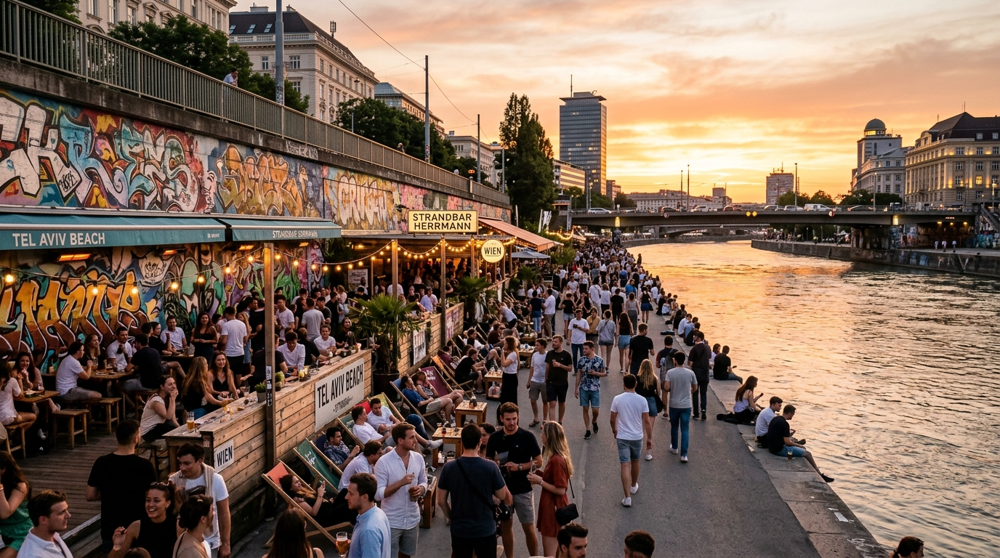
Jantar na Schöne Perle (Karmeliterviertel)
Große Pfarrgasse 2, 1020, 11 min a pé, do outro lado da Schwedenbrücke, no fim natural do passeio do canal. Cozinha vienense honesta, ambiente de bairro descontraído, com opções vegetarianas e veganas. É o bairro onde a cidade é real: ninguém repara que são turistas.
💶 Principais €14,90–29,50 (confirmado no site). Aberto todos os dias 11:00–24:00, cozinha até às 22:30. Reserva recomendada mas não crítica a uma quarta: +43 1 890 32 04.
• Gasthaus Pöschl (Weihburggasse 17, 10 min) se quiserem o melhor prato da noite, o Beisl moderno mais respeitado do 1.º distrito, minúsculo e cheio de vienenses. Peçam o Beuschel, o Backhendl ou o Tafelspitz. Reserva obrigatória, com dias de antecedência: +43 1 513 52 88.
• Zum Bettelstudent (Johannesgasse 12, 11 min) se chegarem atrasados do canal, barato, barulhento, sem pretensão, entra-se e senta-se sem reserva. E fica a 100 m do DANZÓN.
Bermudadreieck & DANZÓN · "FIESTA" de quarta
21:15 → 22:30 · Bares no Bermudadreieck, à porta de casa, sem entrada e sem dress code:
• Krah Krah, ⚠️ fecha à meia-noite, serve para começar.
• Salzamt, esplanada na praça, até à 01:00.
• First Floor, cocktails, até às 02:00.
22:30 → ~02:30 · DANZÓN Latin Club, Johannesgasse 3, 12 min a pé. Festa "FIESTA" fixa todas as quartas, 20:00–04:00: reggaeton, latin house e bachata, público 20–35 internacional, sem porta seletiva.
⏰ Chegar às 22:30, a sala só enche depois dos workshops de dança, que acabam às 21:00.
🌭 No regresso: Würstelstand am Hohen Markt, até ~04:00, a 3 min de casa.
Brunch no Haas & Haas & Provar Sachertorte
11:00-12:30 brunch sem pressas no pátio escondido do Haas & Haas (Stephansplatz 4), a 7 min a pé de casa. 12:40-13:20 descer a Kärntner Straße (8 min) até ao Café Sacher, ao lado da Ópera, para a icónica Sachertorte, ou à pastelaria imperial Gerstner, na mesma rua.
🎫 Às 13:20 ativar o bilhete de 24h (€10,20), cobre Schönbrunn, o Prater e ainda a ida à estação amanhã de manhã.
Palácio & Jardins de Schönbrunn
13:25 U4 em Karlsplatz direto a Schönbrunn (12 min + ~7 min a pé até aos portões). Residência de verão dos Habsburgos e de Sissi.
14:00-15:15 visita ao palácio (Schlossticket, 75 min com audioguia). 15:15-16:15 subida à colina da Gloriette, 700 m a subir pelos jardins barrocos, para a vista sobre Viena.
Wiener Prater & Jantar de Grupo no Schweizerhaus
Saída de Schönbrunn às 16:20. U4 até Karlsplatz, mudar para o U1 até Praterstern, ~35 min ao todo, tudo sentado e já pago pelo bilhete de 24h.
17:00-17:30 passeio pela Kaiser Wiesn (ver abaixo). 17:30-18:15 volta na centenária Roda Gigante Riesenrad (€14,50, o bilhete de €17 é o Flex, com validade de um ano, de que não precisam). 18:15-20:15 jantar a 4 min a pé no lendário Schweizerhaus: pernis de porco estaladiços (Stelze) e cerveja Budweiser de pressão.
A entrada no recinto durante o dia é gratuita: três tendas, cinco "alpes", 20 000 m², Dirndl e Lederhosen, música ao vivo. Só os eventos noturnos dentro das tendas são pagos, e esses não vale a pena comprar: seria pagar para ver uma versão pequena do que já têm garantido em Munique no Dia 6.
⚠️ Consequência prática: o Prater vai estar muito mais cheio do que num dia normal. A reserva do Schweizerhaus deixa de ser recomendável e passa a ser obrigatória, e confirmada por telefone na semana anterior, não só online.
E porquê o U1 e não o U2, que também sai do Karlsplatz? Porque o U2 dá a volta ao Ring: de Karlsplatz a Praterstern são 7 estações pelo U2 contra 4 pelo U1.
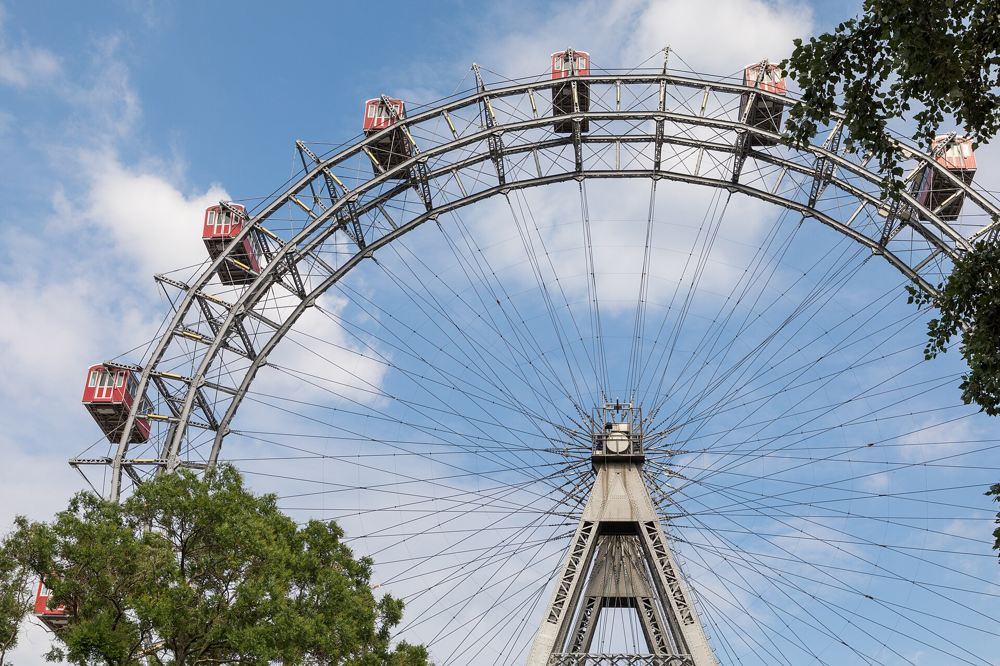
Cocktails no Rooftop Das Loft (SO/ Vienna)
No 18º andar (Praterstraße 1, Leopoldstadt), a 650m a pé (8 min) do alojamento atravessando a ponte Schwedenbrücke. Vista panorâmica espetacular sobre a cidade iluminada e teto de vidro multicolorido.
👔 Reservar, e há dress code.
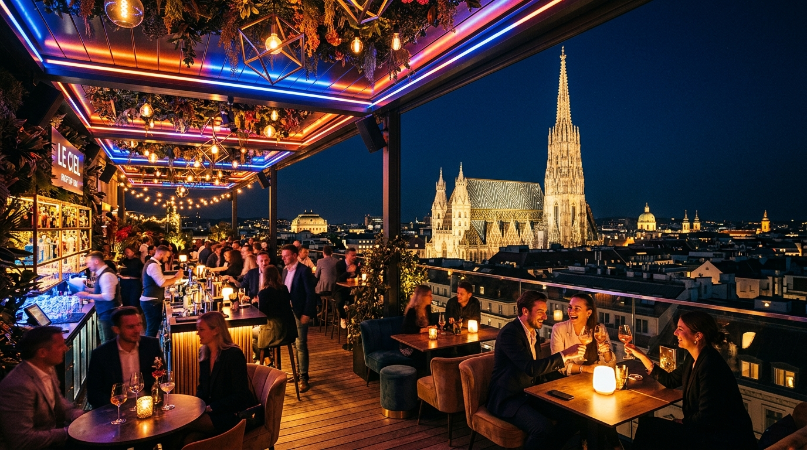
Check-out em Viena ➔ Wien Westbahnhof
Acordar às 09:45, check-out do apartamento na Judengasse às 10:00 (combinar a hora com o anfitrião na véspera). Metro U1 de Schwedenplatz até Stephansplatz, mudar para o U3 até Westbahnhof, ~25 min. O bilhete de 24h do Dia 2 ainda cobre este trajeto se foi ativado depois das 13:20 de quinta.
Viena ➔ Salzburgo ➔ Augsburg (2 comboios, 2 bilhetes)
10:38–13:08 Westbahn 910, Wien Westbahnhof ➔ Salzburg Hbf, direto, 2h30. Lugares 224A, 224B, 223A, 223B.
13:08–14:00 52 min em Salzburgo, almoço na estação ou 10 min a pé até ao Salzach.
14:00–16:14 ICE 116, cais 2 ➔ Augsburg Hbf, direto, 2h14.
São só as 4 pessoas que vêm de Viena.
1) Westbahn 910, Wien Westbahnhof ➔ Salzburgo, WestSuperpreis com reserva incluída, €175,96.
2) ICE 116 na DB, Salzburgo ➔ Augsburgo, Super Sparpreis €135,96 + reserva de lugares €22,00, €157,96.
Não é preciso Bayern-Ticket neste dia, só volta a entrar no Dia 6.
É por isso que se escolheu o comboio das 10:38 e não o das 11:38: dá 52 minutos de folga em Salzburgo. A Westbahn teria de acumular quase uma hora de atraso numa viagem de 2h30.
Se perderem o ICE em Salzburgo: a ligação seguinte é o RJX das 15:00, que só chega às 17:29, tarde demais. Telefonar imediatamente a tentar remarcar o levantamento.
Check-in no Lexapartments & Encontro dos 6
Táxi ou tram da estação até ao apartamento de 101m² em Am Bogen 6, na Jakobervorstadt. Check-in, largar as malas e encontro com os 2 amigos que se juntam na Alemanha, grupo completo de 6 a partir daqui.
Levantamento do Carro de 7 Lugares (Aindlinger Str. 14)
Táxi pré-reservado do apartamento até à agência Enterprise (~5 km, ~10 min, €15-20). Vão só 1 ou 2 pessoas, os restantes ficam a desfazer as malas.
✅ Reservado: levantamento às 17:00, VW Touran ou similar, 4 dias, €427,58. A entrega leva 30 a 40 minutos de papelada, seguro e volta de inspeção, por isso é que a marcação é às 17:00 e não às 17:30: com o balcão a fechar às 18:00, meia hora mais tarde e o processo acabaria depois de fecharem.
Fuggerei: O Bairro Social Mais Antigo do Mundo (1521)
Quatro minutos a pé do apartamento. Jakob Fugger, o banqueiro mais rico da Europa do Renascimento, mandou construir em 1521 um bairro murado para os cidadãos pobres de Augsburg. Continua a funcionar exatamente para o mesmo fim: 67 casas, 142 apartamentos, ~150 residentes. A renda anual nunca mudou em 500 anos, 0,88 € por ano (um florim renano), mais três orações diárias pela família fundadora. Entra-se por um portão e é uma cidade minúscula lá dentro: ruas, praças, a igreja de São Marcos.
➕ 18:25-18:40 · Damenhof, no Fuggerhäuser (Maximilianstraße 36–38), a 350 m e literalmente no caminho para o jantar. Pátio de arcadas mandado construir pelo mesmo Jakob Fugger em 1515, tido como o claustro renascentista florentino mais refinado a norte dos Alpes. Acesso livre e gratuito, dez minutos.
Jantar Bávaro na Rathausplatz
Da Fuggerei à Rathausplatz são 7 minutos a pé pelas ruelas do Lechviertel. Primeiro jantar dos 6 juntos, na praça monumental de Elias Holl. Sugestão: Altstadtgasthaus Bauerntanz (Bauerntanzgäßchen 1, no beco atrás da Câmara), a taberna mais antiga da cidade, cozinha suábia-bávara, sexta 11:30-23:00. Reservar: +49 821 153644, mesa de 7 à sexta à noite não aparece sozinha.
Lechviertel "Pequena Veneza" & Maximilianstraße Iluminada
O sol põe-se às ~19:05, portanto isto faz-se com a cidade já iluminada, e é a melhor hora para o fazer. Circuito curto e circular, tudo em ruas de pedra: Rathausplatz com o Augustusbrunnen ➔ Maximilianstraße, a avenida renascentista com o Merkurbrunnen e o Herkulesbrunnen ➔ regresso pelo Lechviertel, o antigo bairro dos artesãos cortado por canais estreitos a que os locais chamam "Pequena Veneza", passando pela Augsburger Puppenkiste. Acaba a 5 minutos do apartamento.
Augsburg ➔ Castelo de Neuschwanstein (Füssen)
113 km pela estrada federal B17, ~1h35 de condução cruzando aldeias alpinas. Paragem nos parques de estacionamento oficiais de Hohenschwangau aos pés do castelo.
💤 Acordar às 10:00 também neste dia. A tarde faz-se por esta ordem: Oberammergau primeiro, com sol, e o Eibsee ao pôr do sol, porque a aldeia encosta à face do monte Kofel e entra em sombra por volta das 18:00. Assim cada sítio apanha a luz que lhe assenta, sem ninguém ter de madrugar. Jantar às 21:30.
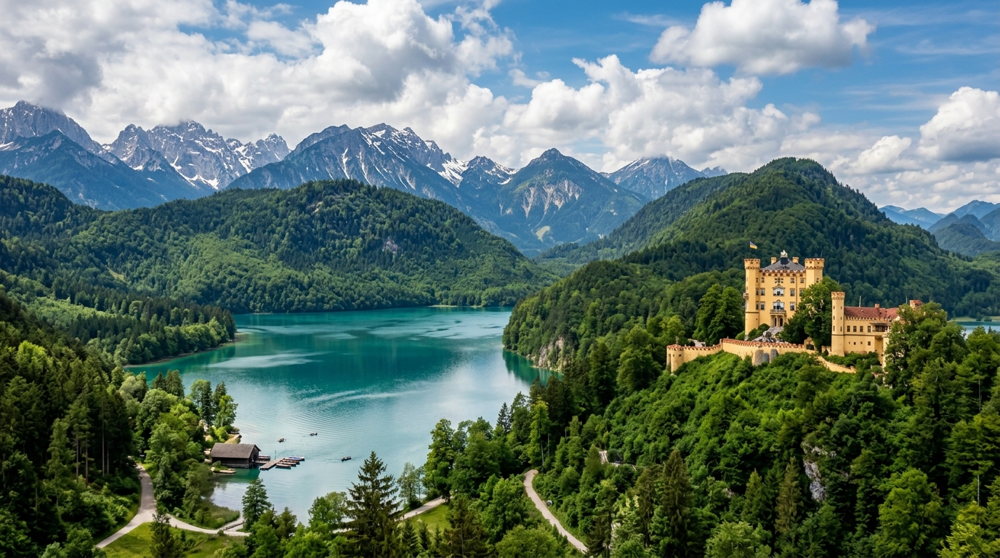
Castelo de Neuschwanstein & Ponte Marienbrücke
12:05 estacionar, subida de shuttle e travessia da Ponte Marienbrücke sobre a garganta do Pöllat, é ali que se tiram as fotografias. 14:00 visita guiada (~35 min) ao castelo de conto de fadas do Rei Ludwig II que inspirou a Disney. Descida ao vale até às 15:30.
🏞️ Se sobrar tempo antes da hora, o Alpsee fica ao lado do Ticket Center e é grátis, melhor do que esperar de pé.
Confirmar o estado da Marienbrücke em hohenschwangau.de na véspera, fecha por mau tempo ou obras, sem aviso.
🚌 Usar o shuttle (~15 min até ao miradouro), não subir a pé. A subida a pé são 30 a 40 minutos de rampa e não cabe nesta margem.
Oberammergau: a aldeia pintada, com sol alto
15:30-16:35 condução: ~60 km pela B17 / B23 via Steingaden, ~1h05, tudo em estrada alemã.
16:35-17:35 passeio pela vila alpina célebre pelas fachadas pintadas com frescos tradicionais (Lüftlmalerei), a Pilatushaus e o artesanato em madeira. Com o sol ainda bem alto, põe-se às 19:03.
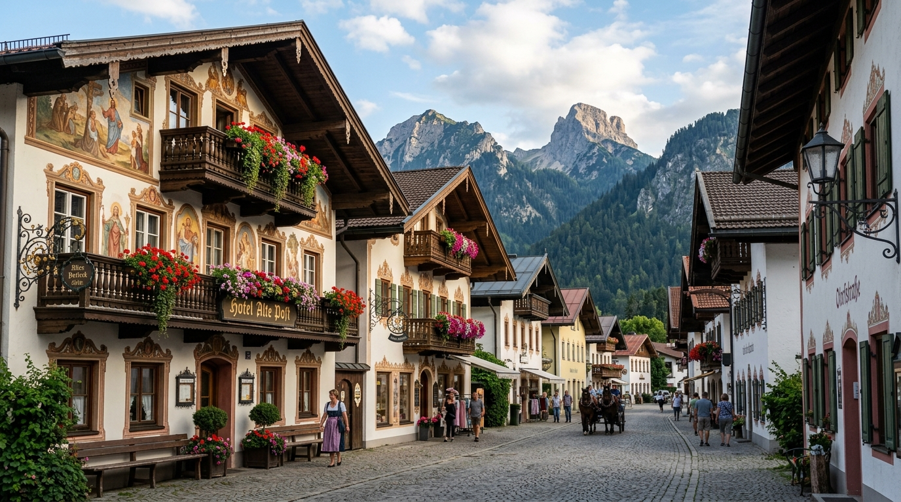
Lago Eibsee aos pés da Zugspitze (2.962m), à hora dourada
17:35-18:10 condução: ~30 km via Garmisch.
18:10-19:15 no lago de águas turquesa aos pés da montanha mais alta da Alemanha. O sol põe-se às 19:03, chegam mesmo à hora dourada, com o maciço refletido na água.
🚗 19:15-21:15 regresso a Augsburg (~131 km, ~2h00). Jantar às 21:30.
O que se faz: do parque de estacionamento (a 100 m da margem) segue-se o trilho da margem norte até à ponte do Untersee e volta-se, ~2 km cada sentido, com a melhor vista sobre a Zugspitze. Estacionamento €9–10 até 4 h.
🍺 Contar com a caminhada e não com a cerveja. Os 4 km já levavam ~50 dos 65 minutos, mas o problema é outro: às 18:10 o Biergarten am See deve estar fechado. A época está boa (a eibsee.de garante «längstens geöffnet bis 04. Oktober 2026», e só com bom tempo), mas a hora de fecho não está publicada: os agregadores dão o Pavillon das 10:00 às 18:00 ou das 10:00 às 19:00, e nenhum é fonte primária. ⚠️ O trilho é o plano, a cerveja é bónus. Quem a quiser telefona na véspera para o +49 8821 98810 e, se servirem depois das 18:00, faz só um sentido do trilho.
Se preferirem jantar mais cedo: sair de Augsburg às 09:45 (despertar às 08:30) e manter a entrada nas 13:30: tudo 30 min antes, jantar às 21:00.
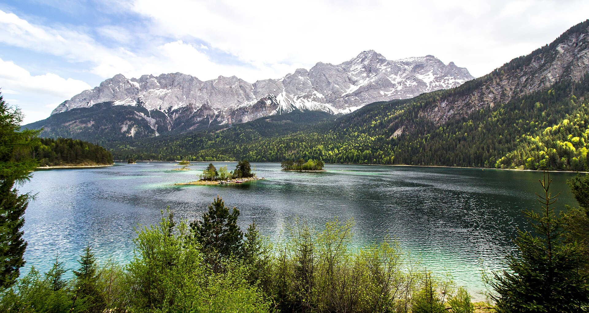
Augsburg ➔ Rothenburg ob der Tauber
Duas rotas possíveis, escolher uma:
🌻 Estrada Romântica (B25): ~152 km, ~2h30 de condução, passando por Donauwörth, Harburg, Nördlingen e Dinkelsbühl. É a bonita, mas obriga a sair às 10:30.
🔴 A autoestrada não é o atalho que parece. É 34 km mais longa por causa da volta por Ulm, e a estrada bonita custa apenas ~30 minutos a mais. Ida e volta, a autoestrada gasta ~68 km de combustível a mais. As vilas da Estrada Romântica ficam na B25, e não se apanham pela A7.
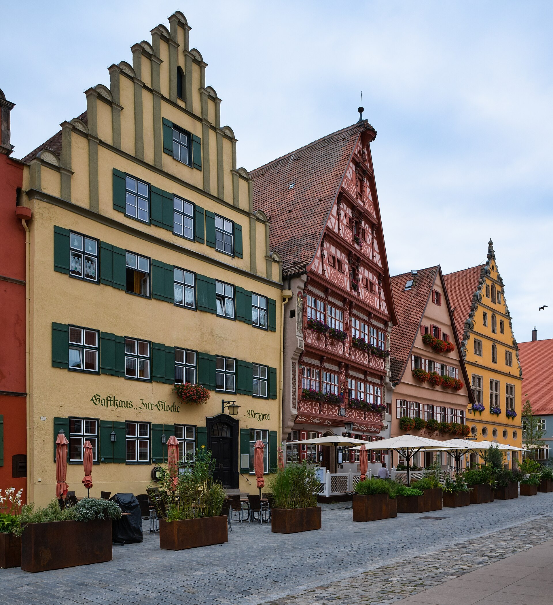
Muralhas Históricas, Praça Plönlein & Schneeballen
Caminhada ao longo das muralhas do século XIV, casas de enxaimel coloridas, almoço em taberna tradicional (Fränkische Bratwurst) e prova dos famosos doces Schneeballen.
🖼️ 14:45-15:15 · St. Jakobskirche (Klostergasse 15, 200 m da Marktplatz). €5/pessoa, aberta ao domingo das 10:00 às 18:00. No piso superior está o Altar do Sangue Sagrado, entalhado em tília por Tilman Riemenschneider entre 1500 e 1505: é um dos maiores tesouros da escultura sacra alemã e, com alguma probabilidade, a melhor coisa que há em Rothenburg.
🌄 13:45-14:10 · Burggarten (400 m da Marktplatz, grátis): o promontório do antigo castelo imperial dos Hohenstaufen, com a panorâmica mais desafogada sobre o vale do Tauber e a ponte medieval de arcos duplos.
🚗 17:30-19:30 regresso a Augsburg (186 km, ~2h00). Jantar e deitar cedo, amanhã é o grande dia.
Sair de casa para a Augsburg Hbf
São 17 minutos a pé desde o Am Bogen 6 até à estação, e não há folga para os esquecer: saindo às 11:00 chega-se ao cais em cima da partida.
Augsburg Hbf ➔ München Hbf (2x Bayern-Ticket)
Viagem rápida de 38 min. Como cada Bayern-Ticket cobre no máximo 5 passageiros, compramos 2 bilhetes (1 de 5 pax €74 + 1 de 1 pax €34 = €108 total grupo), com transporte ilimitado o dia inteiro em comboios regionais e em toda a rede MVV de Munique. Carro em segurança no apartamento.
💡 Glockenspiel: toca às 11:00, 12:00 e 17:00, e o das 17:00 apanha-vos já na tenda. Com este comboio chegam à Marienplatz por volta das 12:05 e apanham o fim do das 12:00. Para o ver do início, era preciso o comboio das ~10:47 (sair de casa às 10:25). Vale a pena saber que é o espetáculo mais sobrevalorizado de Munique: 12 minutos de bonecos a rodar. Não vale partir o despertar às 10:00 por causa dele.
Marienplatz, Neues Rathaus & Catedral Frauenkirche
A 10 min a pé da Hauptbahnhof. Marienplatz com a sua câmara neo-gótica e o Glockenspiel, que chegam a tempo de apanhar no fim. Depois, 325 m e 4 minutos a pé até às icónicas torres com cúpulas da Frauenkirche, grátis, segunda 08:00–20:00.
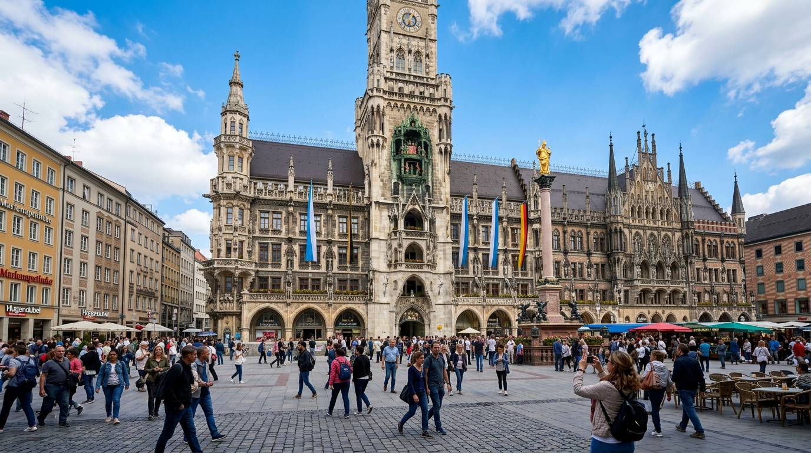
Viktualienmarkt
655 m e 9 minutos a pé desde a Frauenkirche até ao Viktualienmarkt. Uma Weißwurst com mostarda doce, um pretzel gigante, queijo Obatzda, e segue-se.
✅ Ao domingo o mercado fecha. Numa segunda está aberto, sorte do calendário.
Asamkirche
759 m e 10 minutos a pé desde o Viktualienmarkt até à Asamkirche (Sendlinger Str. 32). Grátis, e doze minutos lá dentro chegam. Construída pelos irmãos Asam entre 1733 e 1746 num terreno com oito metros de largura, para uso próprio: é a coisa mais densamente barroca da Alemanha, com iluminação indireta e colunas torcidas.
Karlsplatz (Stachus) & metro até à Theresienwiese
729 m e 10 minutos a pé desde a Asamkirche até ao Karlsplatz (Stachus), e daí U4 ou U5, duas paragens (com a Hauptbahnhof pelo meio, ~3 min de viagem) até Theresienwiese. Incluído no Bayern-Ticket. Os 13 minutos do bloco são para descer ao cais, esperar e sair no meio do fluxo de gente.
A manhã inteira são 2,5 km e 33 minutos de caminhada, num único varrimento para sudoeste da Marienplatz até ao Stachus. (Medido no OSRM, perfil a pé.)
OKTOBERFEST 2026 na Theresienwiese!
O ponto alto da viagem, e sem mesa reservada: anda-se de tenda em tenda. Cerveja de litro Maß (€14,80 a €15,90), frango assado Hendl (€16-19), cantoria bávara e festa rija.
São 8h35 na Wiesn, e não são 8h35 de cerveja: metade disto é o recinto, os carrosséis, as bancas e a Oide Wiesn.
⏰ A última cerveja e a última música são às 22:30 e as tendas fecham às 23:30, mas vocês saem às 22:20, por causa do comboio. Ver o nó seguinte.
Chegar às 16:00 em ponto já é tarde: as zonas não reserváveis começam a encher às 15:00 com outros grupos a fazer exatamente isto, e seis lugares juntos são dos primeiros a desaparecer. Estejam sentados às 15:30. Uma vez na zona não reservável não há limite de permanência, e o lugar é vosso até às 22:20.
🚨 Depois de fixados, ninguém sai da tenda. Se ela entrar em Einlassstopp enquanto alguém foi lá fora apanhar ar, essa pessoa não volta a entrar, por mais que os outros cinco lhe guardem o lugar. Casas de banho, só as de dentro.
⏰ Combinar isto entre os seis antes de chegar. Às 15:30, já com duas Maß dentro, não se decide nada.
✅ A entrada nas tendas é sempre gratuita, a qualquer hora. O que se reserva é o lugar, não a entrada.
✅ 25% dos lugares interiores nunca podem ser reservados nas tendas grandes (exceto Käfer Wiesn-Schänke, Weinzelt e as tendas pequenas).
✅ Nos Biergärten não há reservas de todo. É a vossa melhor carta.
🍺 Sem lugar não há cerveja, e o caneco não sai da tenda (é furto, dá queixa e proibição de entrada). Acabar a Maß antes de mudar de sítio.
⚠️ Para seis pessoas, cada tenda são 45 a 60 minutos: entrar, arranjar seis lugares juntos, ser servido, beber um litro, pagar e sair. Em 105 minutos de tarde cabem duas tendas, não quatro, e com a da noite dão três no dia. Quem tentar quatro bebe quatro litros em duas horas e não chega à noite de pé.
🚫 Não se ocupa mesa com placa de reserva, mesmo vazia.
🌧️ Com chuva as tendas enchem, com sol enchem os Biergärten.
13:45 às 15:30, duas tendas escolhidas destas: Augustiner-Festhalle (o Biergarten de 2.500 lugares, que nunca tem reservas, e a melhor cerveja do recinto), Schottenhamel (a dos jovens de Munique) ou Fischer-Vroni (peixe no espeto, pequena e calma). Se sobrar tempo, gasta-se no recinto ou na Oide Wiesn (~€4, grátis a partir das 21:00 mas só pelas saídas, três tendas tradicionais e um terço dos lugares nunca reservável). Não se enfia uma terceira tenda.
A partir das 15:30, ficar: Hofbräu-Festzelt. A Stehkurve, ~1.000 lugares de pé à frente do palco, não é reservável de todo, e é por isso a única zona da Wiesn que não vos pode fechar a porta.
⚠️ Mas procurem mesa primeiro. A Stehkurve das 15:30 às 22:20 são quase sete horas de pé, depois de uma manhã a andar 2,5 km. É a garantia, não a primeira escolha.
🚫 A Hacker-Festzelt não entra na lista, por mais bonita que seja por dentro: costuma ser das primeiras a fechar as portas.
RE9 n.º 57088: München Hbf 22:58 ➔ Augsburg Hbf 23:46
22:20, sair da mesa. Não às 22:30, não "por volta de". A última cerveja e a última música são às 22:30 e as tendas só fecham às 23:30, mas vocês não podem estar lá para isso. Os dez minutos entre as 22:20 e as 22:30 são exatamente os que faltam no fim da cadeia.
O Bayern-Ticket é válido até às 03:00 e cobre este comboio.
O horário oficial em PDF do operador (Arverio Bayern / agilis, linha RE9, válido desde 14 dez 2025), página de segunda a sexta, dá as últimas partidas de München Hbf como 20:57 · 21:59 · 22:58 · 00:06, e o das 00:06 tem a restrição
n0 = nur Nächte Freitag/Samstag.Na noite de segunda 28 para terça 29, o último comboio é o das 22:58. Depois disso não há nada até de madrugada.
🚶 A pé até München Hbf: 1,4 km, ~18 min, saindo pelo lado norte (Esperantoplatz) e seguindo pela Pettenkoferstraße. É plano, iluminado e não depende de ninguém.
🚇 S-Bahn de Hackerbrücke, 1 paragem, mais rápido se entrarem. Durante a Wiesn a Bundespolizei faz controlo de fluxo e fecha as cancelas periodicamente para não sobrelotar o cais: pode custar 15 a 25 minutos só para chegar à plataforma.
1. Táxi ou van, é este o plano B a sério. ~65 km pela A8, 45–50 min, €150 a €180, que dividido por 6 dá €25 a €30 por pessoa. ⚠️ Combinar o contacto de um táxi ou carrinha de 6+ lugares em Munique ANTES de sair da tenda, não se arranja uma carrinha de sete lugares à meia-noite numa noite de Oktoberfest sem pré-aviso.
2. Talvez um ICE/IC (~€20–25/pax), mas não se conseguiu confirmar que exista algum depois das 22:58 numa segunda-feira. Verificar no DB Navigator nessa manhã, e não sair da tenda a contar com isso.
Check-Out em Augsburg ➔ Palácio e Jardins de Nymphenburg
Check-out do apartamento em Augsburg às 11:00 com as malas já no carro (confirmar a hora de check-out). Condução de ~1h (62 km) pela A8 até ao grandioso Palácio Nymphenburg, residência barroca de verão da realeza bávara. Caminhada ao longo do canal central com cisnes e pelos jardins barrocos.
💤 Acordar às 10:00, depois da noite de Oktoberfest, vai fazer falta.
BMW Welt & Parque Olímpico (Olympiapark 1972)
A ~15 min de Nymphenburg, em percurso urbano pelo Mittlerer Ring, com semáforos. Os 15 minutos entre os dois blocos chegam, mas não sobra nada. Pavilhão futurista com superdesportivos BMW M, Rolls-Royce, MINI e motos de alta tecnologia (entrada gratuita, terça 07:30–24:00). Caminhada pela passarela para ver a icónica cobertura em tenda do Parque Olímpico de 1972.
🏔️ Subir ao Olympiaberg (grátis, 200 m da BMW Welt pela ponte pedonal, ~20 min): a colina artificial feita com os escombros da II Guerra é o melhor miradouro gratuito de Munique, o estádio, a sede da BMW e, em dia limpo, os Alpes.
⚠️ A Olympiaturm, a torre, está fechada para obras até ao final de 2027. Não vale a pena ir lá bater à porta.
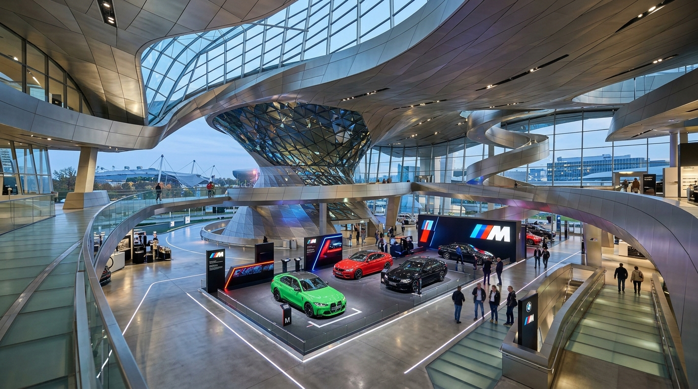
Allianz Arena (Visita Exterior & FC Bayern Megastore)
Condução de ~20 min até ao norte de Munique (Fröttmaning). Acesso livre e gratuito à gigantesca esplanada exterior para admirar as famosas almofadas de ETFE do estádio e tirar fotos de grupo. Visita à FC Bayern Megastore oficial para lembranças.
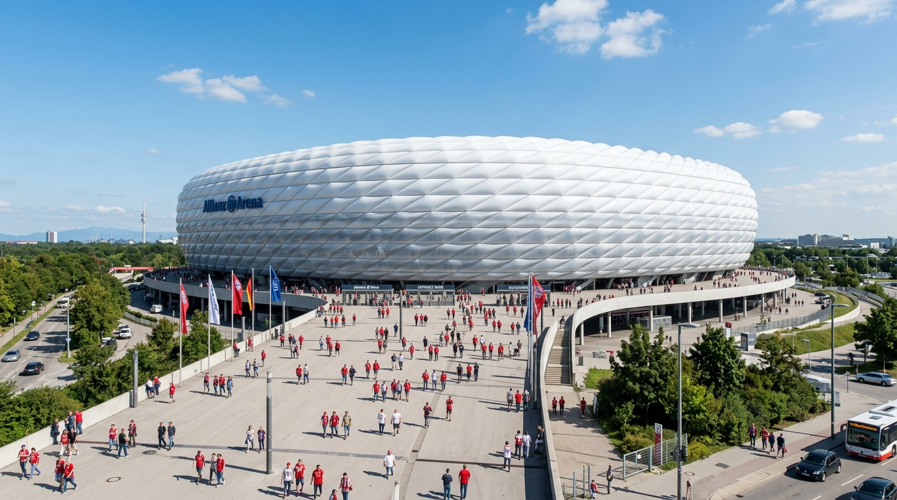
Allianz Arena ➔ Aeroporto MUC & Devolução Enterprise
Apenas ~25 min de condução direta pela autoestrada A92 (28 km). Reabastecer o depósito na bomba junto ao aeroporto e fazer a devolução no Mietwagenzentrum (Terminal 2). No Terminal 2 às 17:15, folga confortável para um voo às 20:00.
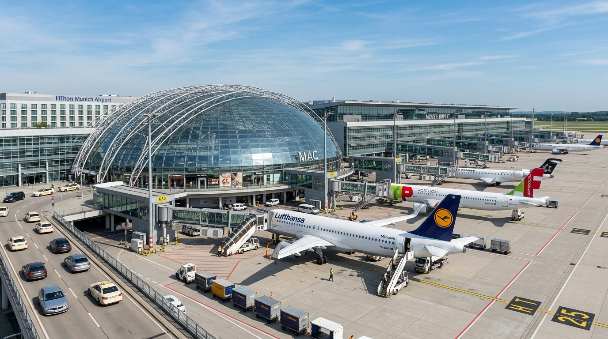
Voo TAP TP 555: MUC ➔ LIS
Embarque às 19:20. Voo direto de regresso a Lisboa (2h 25m). Chegada a Lisboa às 22:25 locais. Fim de uma EuroTrip lendária!
Bilhetes a Comprar & Tratar
Guia completo de todos os bilhetes, prazos de antecedência, links oficiais e caixas de marcação para o grupo.
Voos TAP Air Portugal
Voo de ida TP 1270 (LIS ➔ VIE, 23 Set 08:05) e regresso TP 555 (MUC ➔ LIS, 29 Set 20:00).
Carrinha 7 Lugares (Enterprise)
Reservado. Levantamento sexta 25 Set às 17:00 em Augsburg (Aindlinger Str. 14) e devolução terça 29 Set às 17:00 no Mietwagenzentrum do Aeroporto de Munique. 4 dias, quilometragem ilimitada, proteção de franquia incluída.
⏰ As 17:00 não são por acaso: o balcão fecha às 18:00 e a entrega leva 30 a 40 min de papelada e inspeção, marcado mais tarde, o processo acabaria depois de fecharem. A devolução à mesma hora mantém o aluguer em exatamente 4 dias, sem risco de um 5.º.
Westbahn · Wien Westbahnhof ➔ Salzburg Hbf
Comboio 910, 10:38 ➔ 13:08, direto. Só para as 4 pessoas que vêm de Viena. WestSuperpreis, classe 2 | Standard, reserva incluída.
⚠️ Parte da Westbahnhof, não da Hauptbahnhof: U1 ➔ Stephansplatz ➔ U3, ~25 min desde Schwedenplatz.
DB ICE 116 · Salzburg Hbf ➔ Augsburg Hbf
14:00 ➔ 16:14, direto, sem mudanças, cais 2 em Salzburgo. Super Sparpreis €135,96 + reserva de lugares €22,00.
⚠️ Contrato de transporte independente do da Westbahn. Se perderem esta ligação, a DB não remarca, daí os 52 min de folga em Salzburgo.
Castelo de Neuschwanstein (Visita Guiada)
6 pax, sábado 26 Set, marcar para as 14:00, não para as 13:30: com o despertar às 10:00, só as 14:00 deixam 115 min entre a chegada e o torniquete. A janela de reserva são 2 meses e já está aberta. Sábado em plena Oktoberfest: esgota. Só no site oficial, e não é por causa do preço: o bilhete oficial entra-se com o QR no telemóvel, o de revendedor obriga a levantamento (e cobram +30 a 50%).
2x Bayern-Ticket (Deutsche Bahn)
Máximo 5 pessoas por bilhete, daí serem 2 (5 pax €74 + 1 pax €34: a tarifa é €34 pela primeira pessoa e €10 por cada uma a mais). Viagens ilimitadas no RE Augsburg-Munique e em toda a rede MVV, incluindo a S-Bahn até Hackerbrücke, a paragem da Wiesn.
🔴 É nominativo: preencher os nomes antes de entrar no comboio. Nome e apelido de cada passageiro nos campos próprios, em letra de imprensa no papel ou no ato da compra se for digital. Preenchido ou alterado depois, o bilhete deixa de ser válido.
Transfer Aeroporto VIE (Railjet + U1)
Para as 4 pessoas que voam para Viena. Railjet ÖBB até Wien Hbf + Metro U1 até Schwedenplatz, €5,50, tudo no mesmo bilhete. Pedir Flughafen Wien ➔ Wien com a zona central incluída, senão o U1 fica de fora.
Oktoberfest sem mesa reservada
6 pax, segunda 28 Set. Decidido não reservar mesa: uma reserva é sempre a mesa inteira, 8 a 10 lugares, e vocês são 6, a pagar vouchers do consumo de dez. A entrada nas tendas é gratuita, paga-se o que se bebe e come.
⏰ Estar na Wiesn às 13:45, porque o limite para seis pessoas sem reserva é as 14:00. Às 15:30 sentados na tenda final, na zona não reservável: entre as 16:00 e as 18:00 as portas fecham para a troca de reservas, e às 16:00 em ponto já é tarde para seis lugares juntos.
Palácio de Schönbrunn (Schlossticket)
4 pax, quinta 24 Set, marcar para as 14:00 (não 13:00: com o brunch e a fila do Sacher, às 13:00 chegavam atrasados). Entrada com hora marcada; as faixas esgotam com semanas de antecedência.
⚠️ Schönbrunn mudou os bilhetes em 2026. A "Grand Tour" deixou de existir: chama-se agora Schlossticket, €42 (toda a Beletage, 75 min, audioguia incluído). A versão curta, Staatsappartements, €30, são 40 min e menos salas.
Bilhete 24h Wiener Linien
⚠️ Os passes de 48h e 72h foram descontinuados a 1 de janeiro de 2026. Ativar um 24h na manhã do Dia 2 cobre Schönbrunn + Prater + a ida à estação no Dia 3, sai mais barato que bilhetes simples.
A estrada: combustível e parques
O aluguer da carrinha (€427,58) não inclui combustível nem estacionamento, e o roteiro faz ~840 km ao volante: 343 no Dia 4, 372 no Dia 5 e ~125 no Dia 7.
✅ As autoestradas alemãs não têm portagem para ligeiros, e com a rota do Dia 4 invertida também não é preciso comprar a vinheta austríaca.
Guia da Oktoberfest 2026
As melhores tendas, regras de ouro e como tirar o máximo partido na Theresienwiese.
Hofbräu Festzelt
A Stehkurve: ~1.000 lugares de pé à frente do palco, e a oktoberfest.de diz que é a única tenda da Wiesn com uma área destas. Não é reservável, e por isso é a única zona que não vos pode fechar a porta. Mais 6.018 lugares sentados e um Biergarten de 3.022. Cerveja a 6,3%, a mais forte do recinto.
Augustiner Festhalle
A favorita dos locais de Munique, e a única que ainda tira a cerveja dos Hirsche, barris de madeira de 200 litros que lhe dão menos gás. É também a mais barata do recinto, €14,80. 6.000 lugares dentro e 2.500 no Biergarten, que nunca tem reservas. Em dia de semana o almoço ainda é sossegado, com famílias: aquece ao longo da tarde, por isso é a primeira paragem.
Hacker-Pschorr (Himmel der Bayern)
Teto pintado como o "Céu da Baviera", com nuvens e estrelas, e a melhor banda do recinto. Costuma ser das primeiras tendas a fechar as portas por lotação, por isso não se constrói o dia à volta dela: se estiver aberta quando lá passarem, entra-se.
Anda-se entre tendas antes das 15:30, e não até às 16:00: as zonas não reserváveis começam a encher às 15:00 com outros grupos a fazer o mesmo, e seis lugares juntos são dos primeiros a desaparecer. Depois fica-se sentado na zona não reservável da tenda escolhida, onde não há limite de permanência e o lugar é vosso até às 22:20. E a partir daí ninguém sai da tenda, ou arrisca-se a não voltar a entrar.
Em dias de semana o recinto e as tendas grandes abrem às 10:00 e fecham às 23:30; última cerveja e última música às 22:30. As tendas pequenas servem até às 23:00, e a Käfer Wiesn-Schänke e o Weinzelt vão até à 1:00.
Maß (1 litro) €14,80 a €15,90 · mais barata a Augustiner €14,80, mais caro o Weinzelt €18,40 (só cerveja de trigo) · ½ Hendl ⚠️ €16-19 · Entrada no recinto e nas tendas: gratuita. Sem reserva, contar ⚠️ €60 a €80 por pessoa no dia.
⚠️ Não beber cerveja não poupa nada: a água engarrafada está a €11,13/litro, a Spezi a €12,84 e a limonada a €12,35, contra €14,80 a cerveja.
A mecânica: 25% dos lugares interiores das tendas grandes nunca podem ser reservados de segunda a sexta (40% até às 15:00 ao fim de semana, depois 25%), na Oide Wiesn é sempre um terço, e nos Biergärten não há reservas de todo.
Ein Prosit, ein Prosit, der Gemütlichkeit!
Oans, zwoa, drei, g'suffa!" 🍻
Guia Gastronómico: O que Comer
Os pratos e sobremesas que não podes deixar de provar na Áustria e na Baviera.
Wiener Schnitzel
O clássico bife panado fino austríaco, servido com salada de batata morna ou batatas fritas e limão fresco.
Sachertorte Imperial
Bolo de chocolate denso com camada de doce de damasco artesanal e cobertura de chocolate crocante com natas batidas.
Stelze / Schweinshaxe
Pernil de porco assado no espeto com pele ultra estaladiça, raiz de rábano picante e mostarda. Estrela do Schweizerhaus!
Weißwurst & Brezn
Pequeno-almoço bávaro por excelência: salsichas brancas cozidas, mostarda doce Händlmaier e pretzel gigante morno.
Käsespätzle & Obatzda
Massa artesanal de ovo com queijo dos Alpes derretido e cebola frita crocante. A pasta de queijo Obatzda é imperdível na cervejaria.
Schneeballen de Rothenburg
Doce tradicional de Rothenburg ob der Tauber: tiras de massa frita em forma de bola de neve, cobertas de açúcar em pó ou chocolate.
Guia de Frases & Gíria Bávara
Clica no botão de áudio 🔊 para ouvir a voz nativa em alemão e praticar para os bares!
Meteorologia & Checklist da Mala
Verifica a previsão térmica e marca os itens que já tens prontos na mala.
Temperaturas Médias Previstas
Final de Setembro é o início do outono dourado.
O que Levar na Mala
0% ProntoAlojamentos, Voos & Emergências
Todos os contactos rápidos e referências de reserva num só local.
Alojamento Viena (23-25 Set.) · 4 pax
Central City Apartments (Judengasse 11)
Alojamento Alemanha (25-29 Set.) · 6 pax
Lexapartments Zentral 101m² (Augsburg)
Aluguer de Viatura (Enterprise)
Carrinha 7 Lugares (6 pax), €427,58 · 17:00 → 17:00